2026 Cała książka i cały podcast — za 0 zł
Wszystko o psie
w Polsce.
Za darmo.
Pies jest rodziną. Prawo widzi także odpowiedzialność. 618 stron o KROPiK, kosztach, weterynarii i zachowaniu — w całości bezpłatnie, razem z podcastem do każdego z 61 rozdziałów.
PDF · 618 stron · 19 MB · bez zapisu, bez e-maila, bez opłat

Nie kolejna lista porad
Miłość nie odpowie na każde pytanie.
Wiedza może.
Pięć części, 61 rozdziałów, każdy z własnym podcastem. Od przepisów, przez weterynarię i behawiorystykę, po realny rachunek za psa w polskich warunkach.

Prawo, które naprawdę obowiązuje
KROPiK i obowiązkowe czipowanie, odpowiedzialność za pogryzienie, pies w bloku i na wynajmie, rozwód, spadek, odebranie zwierzęcia przez urząd. Z numerami artykułów i odnośnikami do ISAP.
Zobacz poradniki prawne
Weterynaria bez zgadywania
Zatrucia i pierwsza godzina, kleszcze i babeszjoza, apteczka, ból, onkologia, stomatologia, starość psa. Co robić natychmiast, a co jest sprawą do jutra.
Zobacz poradniki zdrowotneZachowanie na dowodach
Lęk separacyjny, mowa ciała, szkolenie bez dominacji, pies i dziecko.
Szkolenie: nauka kontra mityIle to naprawdę kosztuje
Start, miesięczny rachunek i trzy scenariusze na całe życie psa. Z kalkulatorem.
Policz kosztyMapa lecznic i schronisk
Punkty z OpenStreetMap, filtr całodobowych, dane o schroniskach z raportu GLW.
Otwórz mapęKiedy nie ma czasu czytać
Nagły wypadek
Cztery strony napisane pod jedną sytuację: telefon w ręce, panika i konieczność zrobienia czegoś w ciągu najbliższych minut. Bez wstępów, od razu kroki.
Poradniki
Osobna strona dla każdej trudnej sprawy
Dwadzieścia kilka tematów wyjętych z książki i rozpisanych osobno — z przepisami, źródłami i konkretnym planem działania.
KROPiK i czipowanie
Co zmienia ustawa z 2026 roku, kto ma obowiązek i od kiedy.
Czytaj
Pies i dziecko
Dlaczego gryzie pies znajomy i co na to art. 426 KC.
CzytajSzkolenie bez dominacji
Cztery kwadranty, obalony mit alfy i granica odpowiedzialności karnej.
CzytajSchroniska w liczbach
Oficjalny raport GLW za 2024: 222 schroniska, uchybienia w 106.
CzytajZajrzyj do środka
Tak to wygląda na stronie
Pięćdziesiąt dwie strony podglądu — układ, ilustracje, tabele i przypisy.

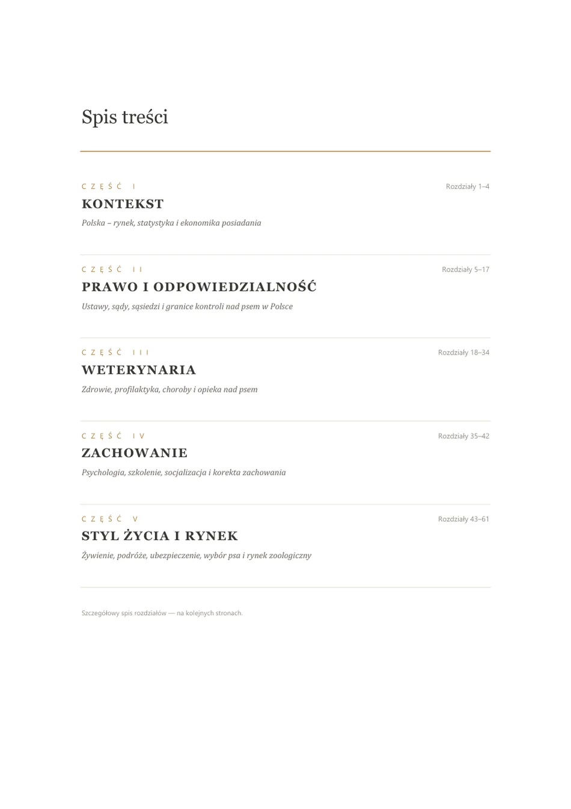
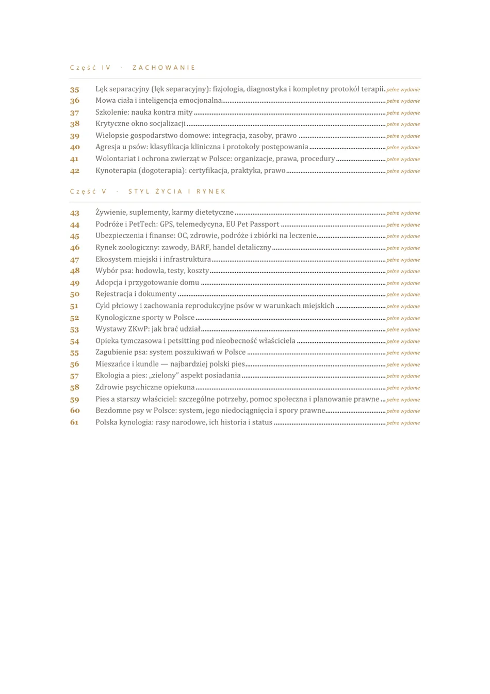
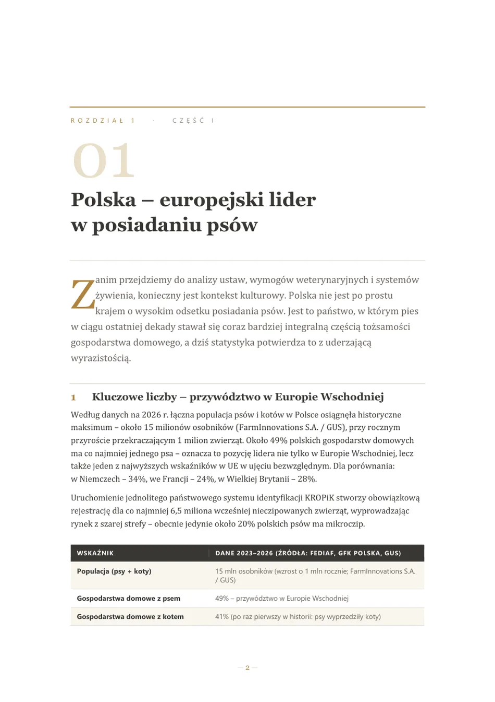
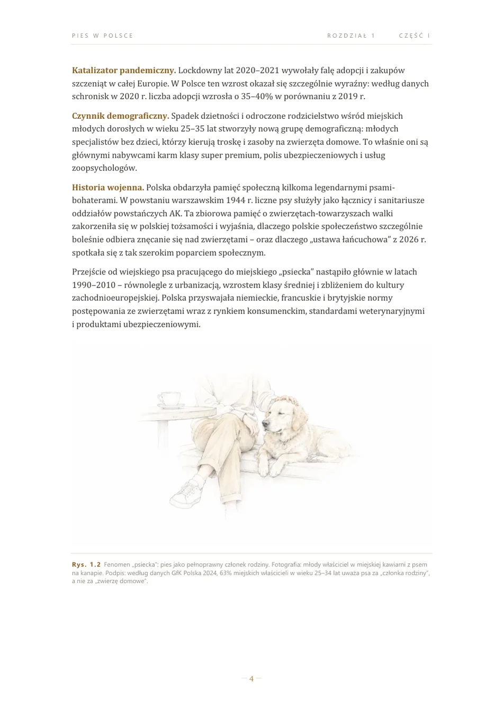
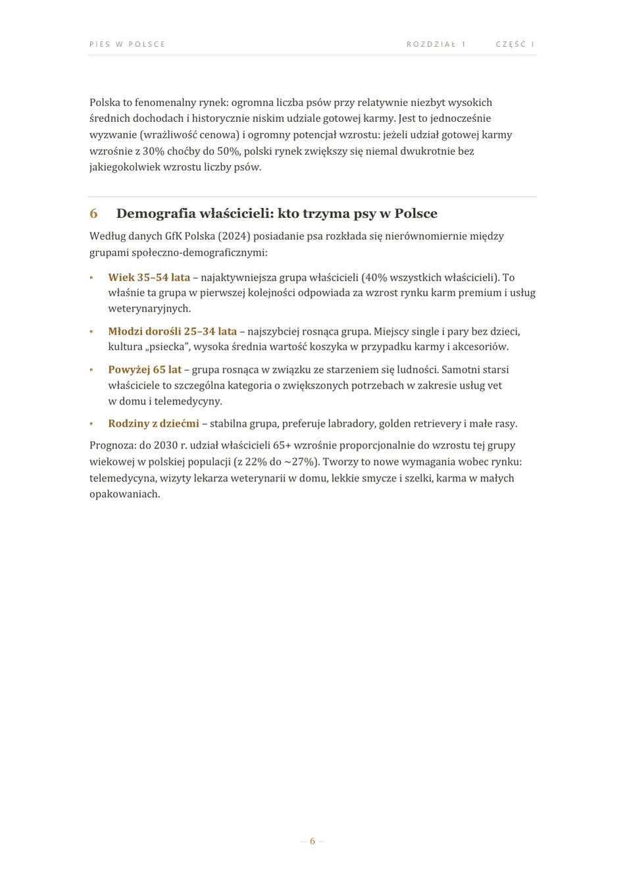
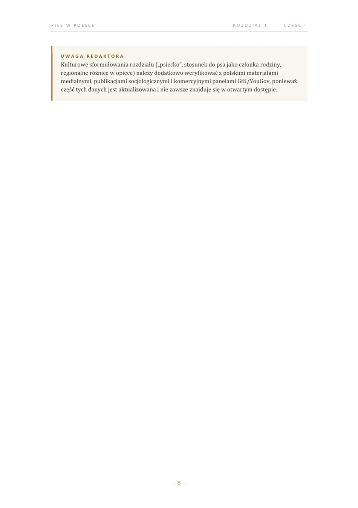
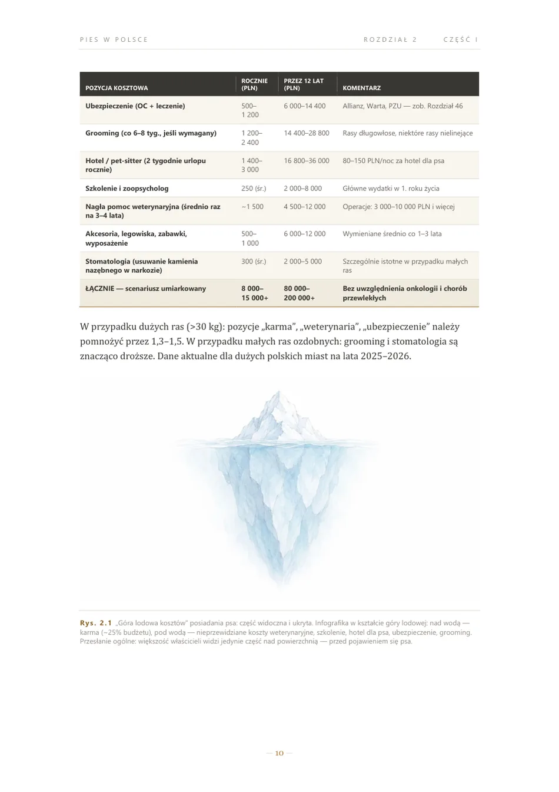
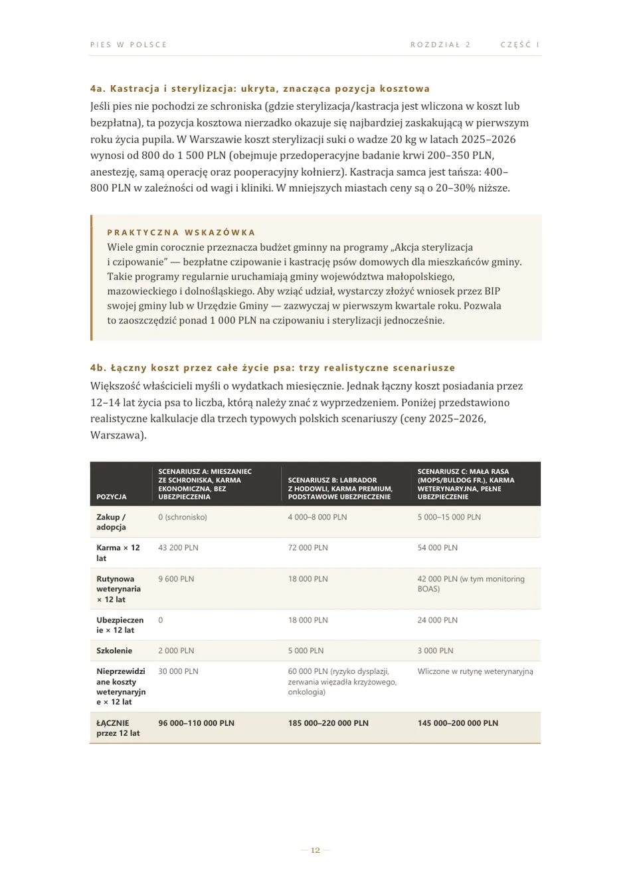
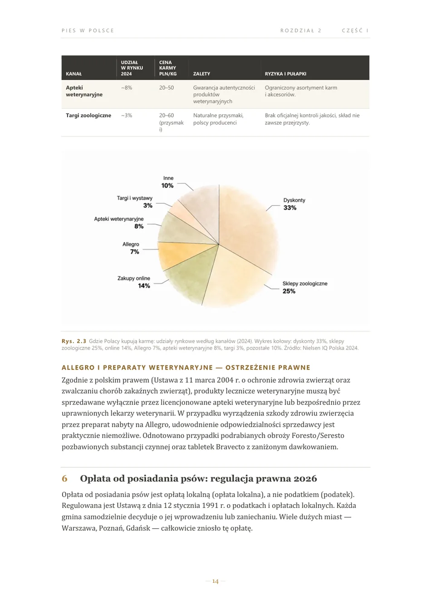
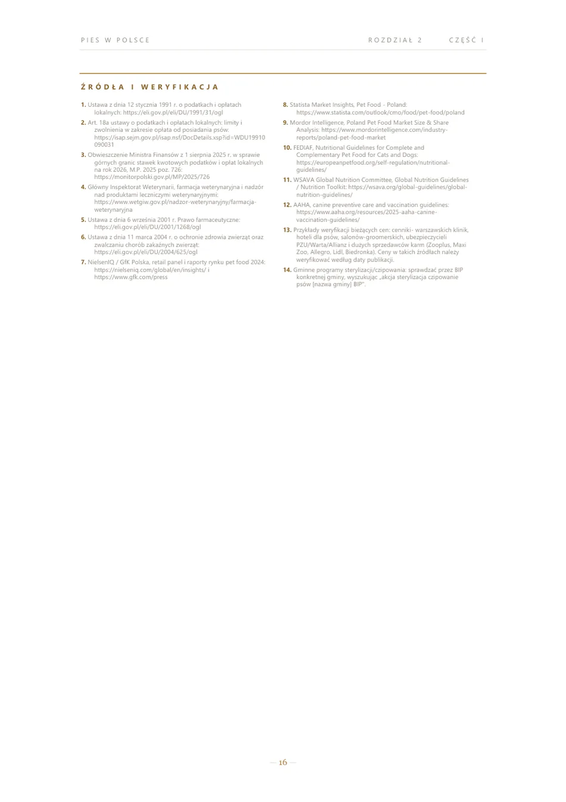
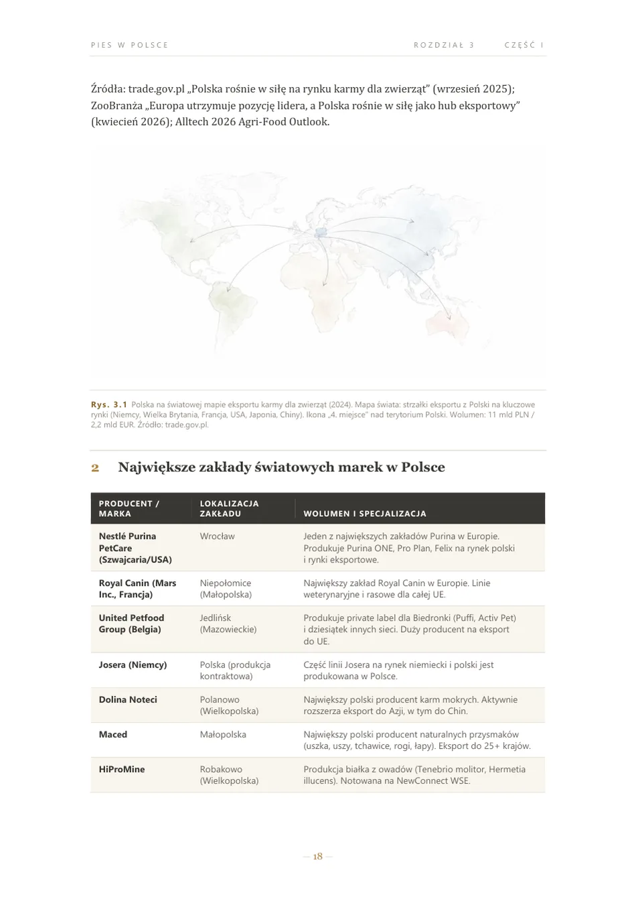
Podcast
Do każdego rozdziału osobny odcinek
Ta sama treść w wersji do słuchania — w samochodzie, na spacerze, przy sprzątaniu. Wszystkie odcinki są bezpłatne, bez subskrypcji i bez reklam.
Pytania
Zanim pobierzesz
Ile kosztuje książka?
Nic. Cała książka w PDF oraz wszystkie odcinki podcastu są bezpłatne — bez rejestracji, bez newslettera i bez podawania adresu e-mail. Żadna część treści nie jest ukryta za opłatą.
Czy książka zastępuje prawnika albo lekarza weterynarii?
Nie. Ma charakter edukacyjny: pomaga zrozumieć temat, przygotować pytania i rozpoznać sytuacje wymagające specjalisty. Nie zastępuje indywidualnej porady prawnej, diagnozy ani leczenia.
Co zawiera bezpłatny fragment?
Fragment ma 52 strony: pięć pierwszych rozdziałów, pełny spis wszystkich 61 rozdziałów oraz informacje o wydaniu. Można go czytać na stronie albo pobrać jako PDF.
Gdzie słuchać podcastu?
Do każdego z 61 rozdziałów powstaje osobny odcinek. Nagrania są na kanale YouTube @PieswPolsce, a komplet audio także w folderze na Dysku Google. Z listy rozdziałów można przejść od razu do wybranego odcinka.
Na jaki dzień aktualny jest stan prawny?
Książka została podpisana do druku w czerwcu 2026 roku i taki stan prawny opisuje. Ustawa o KROPiK jest w okresie vacatio legis — konkretne daty wejścia sankcji w życie warto sprawdzać w komunikatach ARiMR. Każda strona serwisu podaje własne źródła, żeby dało się to zweryfikować bez pośrednika.
Bez opłat, bez zapisu
Weź całą książkę teraz
Jeden plik PDF, 618 stron, 19 MB. Nie musisz zostawiać adresu e-mail ani zakładać konta. Jeśli komuś się przyda — po prostu prześlij dalej.